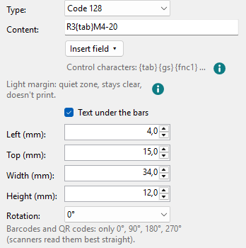
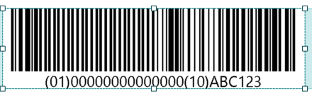
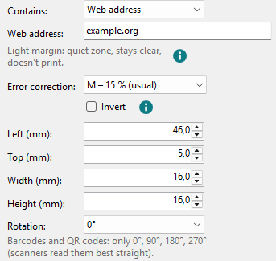
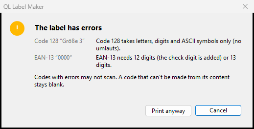
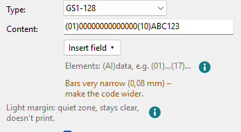
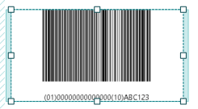

Barcodes and QR codes
Barcodes for article numbers and storage places, QR codes for anything a phone should open. Both are laid out on whole printer dots, so scanners read them reliably.
-
Barcode
The Barcode tool or Insert > Barcode. Under Type choose:
- Code 128
- letters, digits and ASCII symbols (no umlauts)
- GS1-128
- GS1 data, e.g. an article number (GTIN), best-before date and batch
- EAN-13
- 12 digits, the check digit is added; or all 13 digits
Type the Content below. Text under the bars also prints it in plain text. The code fills its box as far as whole printer dots per bar allow.

Control characters in Code 128 are typed like the date fields, in curly brackets:
{tab}tab,{cr}carriage return,{lf}line feed,{gs}group separator,{rs}record separator,{eot}end of transmission,{fnc1}FNC1 and{xNN}any ASCII character by its hex code (00–7F). They are encoded but not printed under the bars. The line under the content is a reminder; the (i) next to it shows the whole list.GS1-128 takes elements that start with their application identifier (AI) in brackets, e.g.
(01)00000000000000(17)261231(10)ABC123: (01) GTIN, 14 digits; (17) best before, YYMMDD; (10) batch; (21) serial number. The brackets are printed under the bars but not encoded; the FNC1 separators are added automatically. Wrong lengths or check digits show in red on the right.
If you switch the type and the content doesn't fit it, a neutral sample content is filled in:
0000000000000for EAN-13,(01)00000000000000(10)ABC123for GS1-128. -
QR code
The QR code tool or Insert > QR code. Under Contains choose what a phone should do with the code; the matching fields appear below:
- Text
- any text, also with umlauts
- Web address
- opens a web page;
https://is added if it's missing - Contact
- first name, last name, company, phone, e-mail, street, postcode and city, website: phones offer to save the contact
- Wi-Fi
- network name, password, encryption, hidden network: phones offer to join
- to, subject, message
- Phone number
- phones offer to call the number
- SMS
- number and message

Error correction sets how much of the code may be damaged: from L – 7 % (smallest) to H – 30 % (most robust); the usual one is M – 15 %. More correction makes the code denser. Invert prints it white on black: White on black.
A QR code is always square. If details are missing or the content is too long, the right side says so in red, and printing asks first (see below).
-
When a code doesn't fit
Below the content, the right side says what is wrong with the code. In red are errors; the code gets a red dashed frame:
- The content can't be encoded; the message gives the reason. The code prints blank.
- Too narrow: at least … mm (QR codes: Too small): at one printer dot per bar the bars don't fit even with the quiet zone. The code prints cut off, as on the canvas.
If a label has such errors, QL Label Maker asks before printing: The label has errors lists the codes and their errors, with Print anyway and Cancel; Cancel is the default.

In orange are hints; the code prints without asking, but scanners may not read it:
- The code is wider than its frame – better at least … mm: the frame is narrower than one printer dot per bar, but the code fits with its quiet zone. It is drawn whole and reaches into the quiet zone.
- The code lies partly outside the printable area and gets cut off.
- Bars very narrow (QR codes: Dots very small): narrower than 3 printer dots, for an EAN-13 below 80 % of the usual 0.33 mm. The message gives the width.
- The text under the bars doesn't fit at this size.

When the code gets narrower, the text under the bars gets smaller so that it fits.

-
A date in the code
Insert field ▾ is here too, for example for a batch number
LOT{date:yyMMdd}. How fields work: Text and text frames.